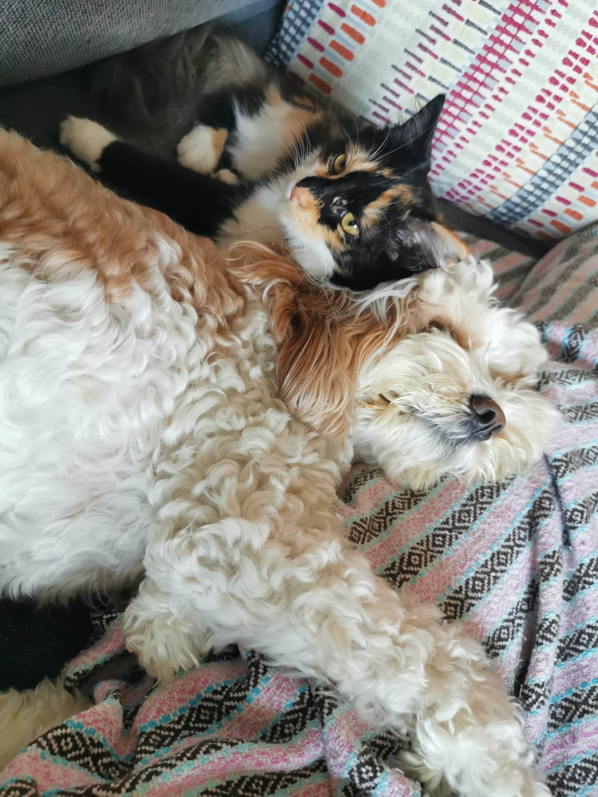

About me
.png)
Kirby Schwenke
Student Number: s3866528
Email: s3866528@student.rmit.edu.au
Location: Sydney, NSW
Qualifications: Bachelor of Management in Events and Leisure, Certification III in Retail Supervision
Alongside my studies I can be found spending time with my pets, Alfie the Cavoodle and Pippa the Tortoiseshell Cat. I had to include a picture! As well as this you can find me gardening on the balcony of my one bedroom apartment, walking my way around Sydney or using my creativity to refurbish a chair, find better ways to complete everyday tasks or to do up my apartment.

Why Information Technology?
I was drawn to study a Bachelor of Information Technology at RMIT due to the ever-changing, ever-growing nature of the IT industry as well as the potential to improve the every day lives of the community through technology. A Bachelor of IT was a great place to start as I could get a more holistic view of the industry and learn about other areas crucial to my understanding of the industry that I otherwise may not have touched on doing a short course in a specific area.
I have always been someone that thrives in an environment that fosters creativity and analytical thinking, and the IT industry is an industry that combines these areas of my life. Alongside this it also provides me with the opportunity to free lance or work flexibly when my life requires it, whether it be to travel, create a family or move somewhere where there may not be a physical office space.
Experiences that Drew me to the IT Industry
A major reason I started studying Information Technology was due to my previous employment and studies that highlighted both gaps in the industry as well as putting a spotlight on areas I am extremely interested in.
I was previously educated and employed within the events industry and through my role as an Event Coordinator I used several pieces of software to both complete everyday tasks as well as to promote and register delegates to an event.
This role involved using drop-and-drag website editors to create websites and I often found myself lost in an internet rabbit hole trying to work out how I can make my websites more aesthetically pleasing and dynamic through both custom CSS and HTML. I found this to be the highlight of my role and I felt a hunger to learn that I did not feel with the events industry.
Alongside my own development of websites, I also worked with a number of technologies including, event registration software, project management software and file management software. All of which helped to reduce the mundane tasks that I had on hand allowing me to focus on more interesting areas, however, often I found gaps where the software did not match the skillset of its users or weren’t intuitive. Partly why I got into the events industry was to improve the morale and culture of organisations through events, and studying IT better helps me to strive for my goal to improve the everyday working life of professionals.
COVID-19 provided me with the final push to move into the IT industry to build on and diversify my skills as well as find a more fulfilling career.
What I Want to Learn
As I have both an analytical and creative background, I am immediately drawn to User Experience Design and how we can utilize our knowledge of the user to create software and hardware that is both intuitive and effective. Having had a small amount of experience in both HTML and CSS, I would love to learn more about how the front-end and back-end of a website work together as well as learning more about dynamic coding. I have a great interest in software, particularly software that is being used to complete a certain task that would otherwise be done by administration staff or software that is being used to improve the every day life of a professional.
One example of a software that I have used that I would in turn love to be involved with is EventsAir, which is an “All in One Events Management Platform” (EventsAir 2020). The introduction of this software meant that I was spending less time doing tedious work associated with having a number of functions across several software.
Dream Career
In researching my dream career, I explored the world of the UX/UI Designer. This career combines both my creative and analytical side as well as my passion to create software to improve the everyday life of the user.
**Snapshot**
Link: https://www.linkedin.com/jobs/view/1840619920/?alternateChannel=search
Position Description
The UX/UI Designer role at Woolworths Group works with the mobile team to improve the user experience of the Woolworths Grocery App. The role utilises research of the market to deliver a user experience that is both engaging and easy to use. It calls for use of your creativity and experimentation to build new experiences for users.
Skills, Experience and Qualifications Required
Hard Skills
- 5 years of experience in designing user experience for native mobile products.
- Ability to translate research and usability findings into solutions.
- Strong understanding of UX Research Methodologies.
- Excellent working knowledge of Sketch and Zeplin, Invision, Principal or Flinto.
- Portfolio of mobile experience.
- Experience with the end-to-end design life cycle.
Soft Skills
- Ability to work both collaboratively and individually.
- Confident with managing stakeholder expectations.
- Passion for learning and innovation.
Skills, Experience and Qualification Gaps
As the above role is quite a senior role, I lack a large degree of the experience and technical skills required for this role. These are areas that can be taught, and I believe that I do, however, possess the soft skills mentioned above.
Regarding the ability to work both collaboratively and individually, I have demonstrated this in both my professional life as well as my personal life. My time as an Event Coordinator has required me to work in a team environment where I am working with several different stakeholders, some of which I don’t interact with until the day of the event. This required me to consistently adapt my communication and working style to suit new people. I also undertook several roles in which I was required to work individually to complete tasks, for example I was responsible for the management of the event websites and consistently worked to create a high-quality product.
I have developed a confidence with managing stakeholder expectations through experiencing conflict in my previous professional experience. This conflict surrounded due dates and a difference of opinion on how quickly each task was to be completed and what was a priority. I learnt through this experience the importance of managing stakeholder expectations, in this case, we did this through creating a critical path timeline and action plan that set out the agreed upon dates for completion.
I have a great passion for learning and innovation, having previously worked for a small business we were consistently looking for new ways to do things and improve efficiencies. I found myself consistently researching and talking to new software developers to ensure what we had was up to date and the most efficient software we could use.
How to fill Gaps
The first step to starting my career as a UI/UX designer is to start my Bachelor of Information Technology, as I am doing. I hope that this will provide me with a broad level of knowledge on the industry and potentially shape where I want to go and what I want to learn.
Another key way to fill these gaps will be to undertake internships or work experience. This particular advertisement values experience over a degree and being able to have practical knowledge of the concepts learnt throughout the degree will be key to obtaining my dream job. A number of roles for UX researchers are available and I believe this will be the best place to start in obtaining relevant skills and a good understanding of the role of a UX designer.
As UX design is very design based, I also plan to undertake a short course on using the Adobe Creative Suite and learning more about design principles associated with this particular career path.
Employment Profile
- Results myers-briggs test
- Results – online learning style test
- One more test e.g. personality test, creativity test, psychometric test
- DISC Personality test – testing for dominance, influence, steadiness and conscientiousness.
The Tests, Explained
These tests present my personality as one that is very hands-on and creative as well as supportive and empathetic towards others. My result as an “Adventurer” in the 16 Personalities quiz (2020), explores my love of being creative and curious, looking for new ways to complete everyday tasks or improve efficiencies in business. This role as an adventurer almost explores who I thrive to be and who I am when I have the freedom to be creative. The next test, that positions me as a “Very Strong Kinesthetic” (VARK-Learn 2020) learner, furthers from my creativity and need to use trial and error to learn. This in combination with my result as an “Adventurer”, links in well with my career prospects as a UI or UX Designer as they are creative people who like to push the boundaries and aren’t afraid to have their ideas fail in order to improve the overall outcome of a product. Further moving on from these tests to the DISC test, the test directly contradicts my description as an “Adventurer”, describing my personality of calm. This further highlights how each individual doesn’t fit in a specific box and although I possess characteristics of an “Adventurer”, I am also strong in other areas such as my empathy.
The Tests and Teamwork
These results highlight my personality as someone who comes up with ideas and is the creative brains of the group. Although I come up with ideas I am also open to new ideas and can be a good listener and someone willing to experiment with a few ideas. Being quite introverted I also rely on others to take charge while I support from the sidelines and provide backup to those who need it.
These tests, however, do not highlight my ability to organize myself and a project and these are other areas I will provide value in.
When forming a team, we need to ensure that we don’t have only creative minds but we also have extroverts who could take on more of the talking, leaders who like to take charge and realists to ensure we don’t lose track of our vision. There is value in each skill and it is all about mixing these skills to reduce the conflict within the team.